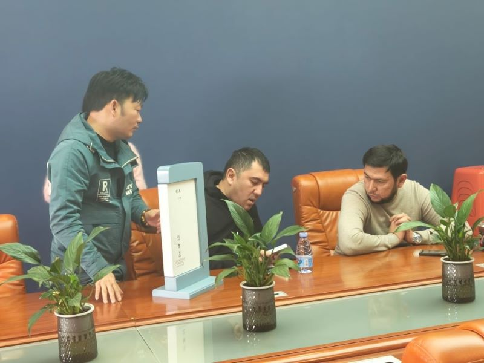

Dois clientes estratégicos da Rússia visitaram recentemente a WAFU LOCK para avaliar nossas capacidades OEM/ODM e a força da nossa produção de fechaduras inteligentes. Durante a visita, ambos confirmaram um pedido conjunto de 500 fechaduras invisíveis com controlo remoto, com pedidos adicionais de maior volume previstos em breve.

Uma visita produtiva
Os clientes russos visitaram nossas linhas de produção, centro de P&D e instalações de inspeção de qualidade. Eles expressaram grande confiança nas capacidades de engenharia da WAFU Smart e na estabilidade da nossa tecnologia de fechaduras inteligentes sem fio.
Durante a demonstração, a nossa equipa apresentou vários dos nossos modelos mais populares, incluindo a nossa gama de fechaduras inteligentes económicas, soluções de fechaduras com controlo remoto, sistemas de fechaduras invisíveis, modelos de fechaduras sem chave, designs de fechaduras sem fio e a mais recente tecnologia de fechaduras eletrónicas sem fios.
Por que os clientes russos escolhem a WAFU LOCK
Principais vantagens destacadas
- Grande flexibilidade OEM/ODM para soluções personalizadas de fechaduras inteligentes
- Preços competitivos para compras em grande volume
Forças técnicas reconhecidas
- Desempenho sem fio estável e controlo remoto de longa distância
- Estrutura avançada de fechadura invisível garantindo maior segurança
Olhando para o futuro
Ambos os clientes russos confirmaram que este pedido inicial de 500 unidades é apenas o começo. À medida que o mercado local cresce, eles planejam introduzir mais produtos WAFU Smart e expandir para categorias adicionais de fechaduras sem fio e fechaduras de entrada sem chave.
Resumo
Esta visita bem-sucedida de dois clientes marca mais um marco no desenvolvimento global da WAFU LOCK. Com fortes capacidades OEM e uma gama completa de soluções económicas de fechaduras inteligentes, a WAFU LOCK está comprometida em apoiar parceiros em todo o mundo com tecnologia inovadora, confiável e segura de fechaduras inteligentes sem fio.